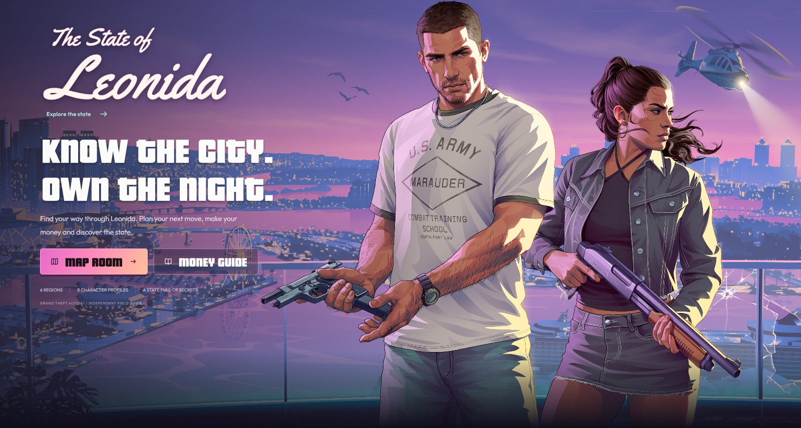
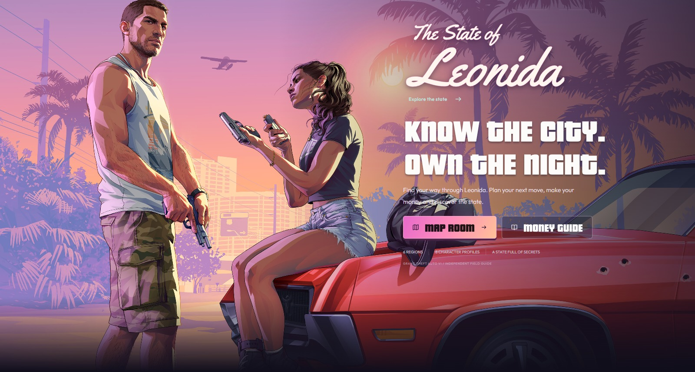
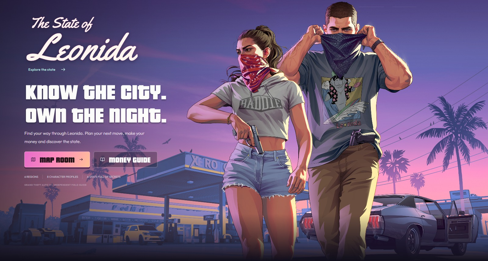

A · RECOMMENDED / CURRENT
Rooftop after dark
Keeps the city, helicopter and robbery-ready mood you liked. The wider framing reveals more of the artwork, with matching script lettering in the upper-left space.
The same homepage, using three official Rockstar artworks. The rooftop direction stays live while you compare these options.

Keeps the city, helicopter and robbery-ready mood you liked. The wider framing reveals more of the artwork, with matching script lettering in the upper-left space.

Warm palms, a red muscle car and a more relaxed Vice City atmosphere. The copy moves to the right to protect Jason’s face.

Leans into the robbery preparation: masks, palms and a violet dusk. A stronger crime-story mood, with less emphasis on the skyline.